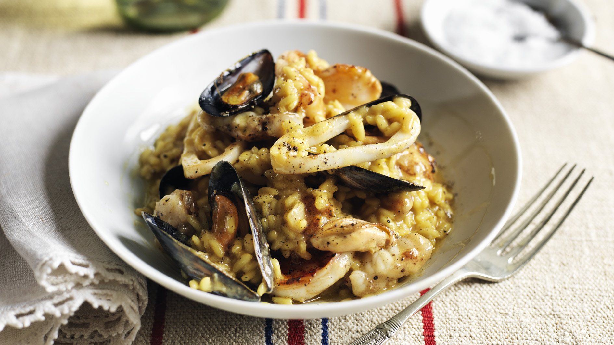

Seafood Risotto

Description
This seafood risotto is easy to make and quicker than a classic risotto. It has a gorgeous creamy texture and taste and makes a delicious spring or summer dish!
Ingredients
- 2 tablespoons olive oil
- 1 large leek
- 2 cloves garlic, minced
- 1 cup Arborio rice
- 2 cups chicken broth
- 1 cup dry white wine
- 1/2 pound bay scallops
- 1/2 pound medium shrimp
- 1 cup snow peas
- 1 medium red bell pepper
- 3 tablespoons grated Parmesan cheese
- 2 teaspoons dried basil
- 2 tablespoons lemon juice
- ground black pepper to taste
Steps
- Heat olive oil in a large, heavy-bottomed saucepan over medium-low heat. Add leek and garlic; cook and stir until soft, about 5 minutes. Add rice and cook for 5 minutes more, stirring frequently.
- Pour in 1 1/2 cups chicken broth and bring to a boil over high heat, stirring occasionally. Reduce heat to medium-low and simmer, uncovered, for 5 minutes, continuing to stir occasionally. Pour in remaining chicken broth and wine; increase heat to medium and cook for about 5 more minutes, stirring constantly.
- Add scallops, shrimp, peas, and red pepper. Cook, stirring constantly, until remaining liquid is almost absorbed and seafood has cooked, about 5 minutes. When rice is just tender and slightly creamy, season with Parmesan cheese, basil, lemon juice, and pepper.
- Enjoy